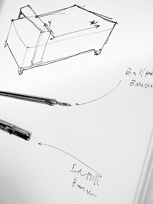
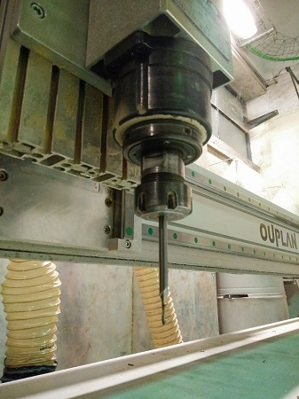
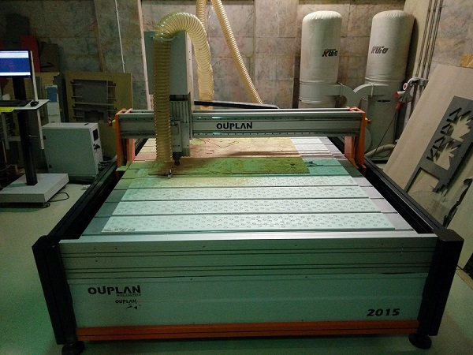
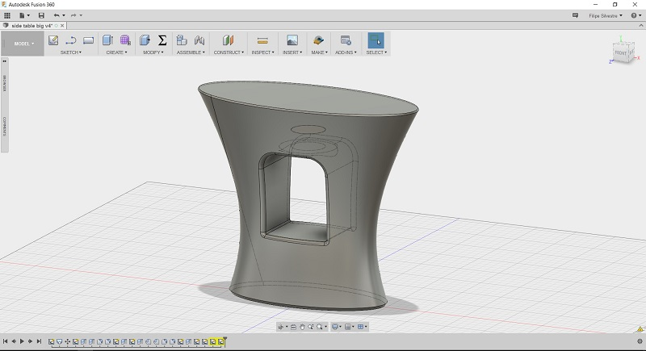
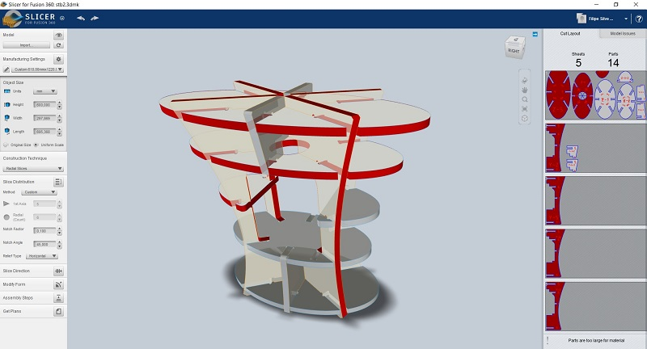
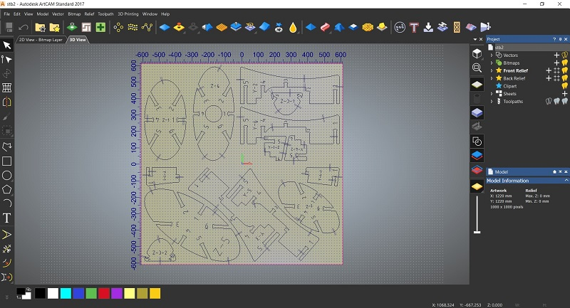
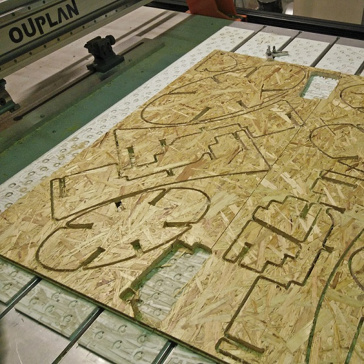

#07. Computer-controlled Machining
Making something BIG
This week we had to do something big, needless to say you need some sort of big equipment to do this wish unfortunately wasn't so easy since FCT FabLab does not have any equipment of such dimensions since it is located in a building where there are classes everyday. The alternative was a CNC that exists at the mechanical department of the faculty but for now it has some eletric problems and we cannot use it.

Having in mind all of the above, we contacted the FabLab Lisboa in order to use their CNC. The equipment used was an Ouplan 2015 with around 2000x1500x150mm of volume, and in my case a 8mm endmill tool.


First started with an idea wish was to make a simple sidetable sofa, i moved into a new home recently and we still don't have and sometimes need this furniture. To make it i used Autodesk Fusion 360, made two elipses and a loft between, put a hole in the middle for some art and then used the new Slicer, an app for Fusion 360 (old 123D Make). In this app was just a matter of choosing how i wanted to make the cuts of my drawing wish in this case was a radial cut with 6 boards vertical and 5 other horizontal.


While in Slicer you can choose how you want the grooves for the press fit to be, either vertical, horizontal or "dogbone" like, and wish in my case i've chosen horizontal. After all is done it was just a matter of exporting the file and then use AutoCAD to check every file, wish unfortunately wasn't all good. Aparentelly the software still doesn't sort of cuts in order to use the maximum of the board possible and so i had to use another software to make this, and so, from a 5 board work i got them in only 2. Even though the sidetable wasn't very big, the truth is that the boards i wanted to use couldn't be very big because i couldn't fit any bigger in my car, so i managed the files in order to fit all in the boards.
Having the dwg ready i went into Autodesk ArtCAM 2017 and made the toolpath to make the cuts. The exterior lines was made on the outside cut, chosen an 8mm endmill tool, even put the small tabs (wish unfortunately didn't work), used lead in/lead out moves and also the correct depth of cut. After this was only needed to export the NC file for the toolpath and open it in the equipment software, made the check list and iniciated the job and after about an hour all of the board was cut.


Still haven't been able to put it all together since the result wasn't very good and i'm still waiting to be able to make another atempt at making something BIG, so, as soon as i can i'll make something greatly big.